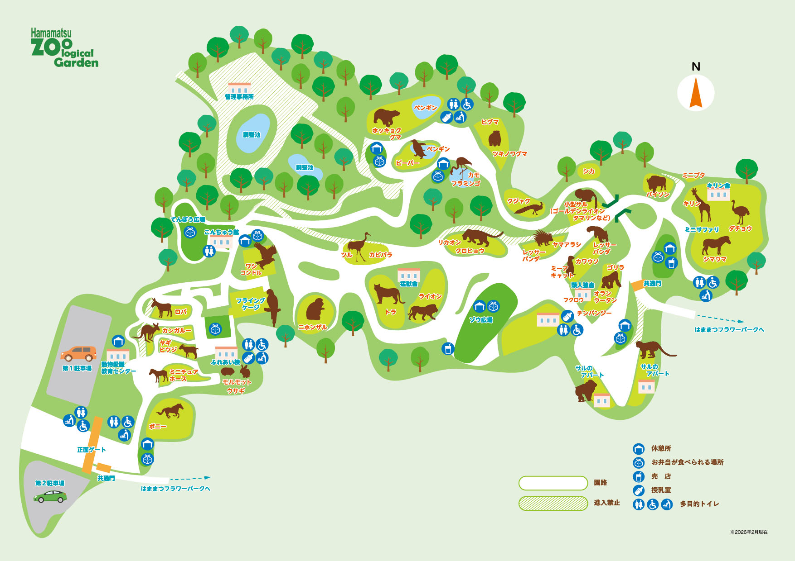
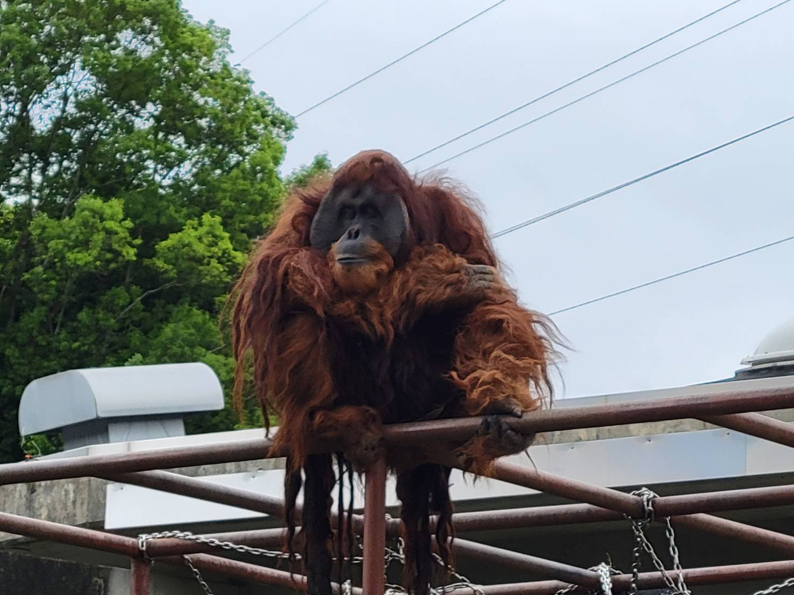
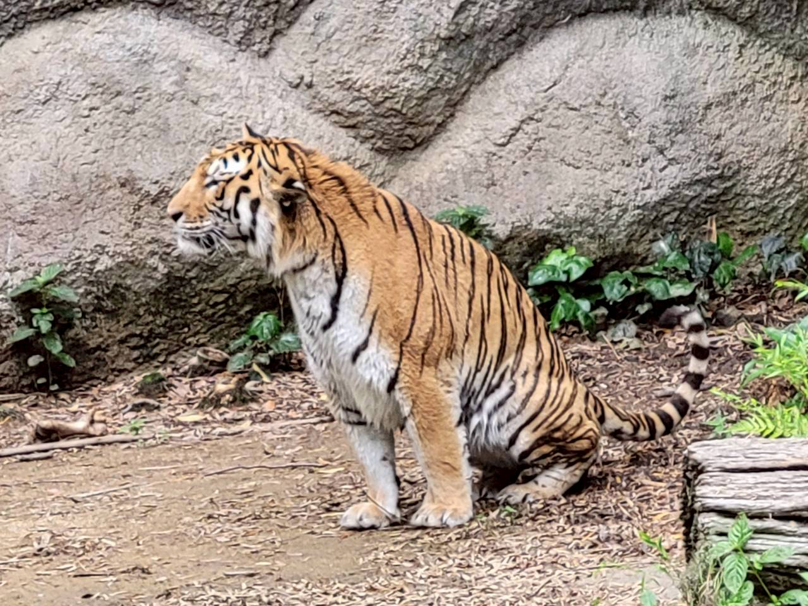
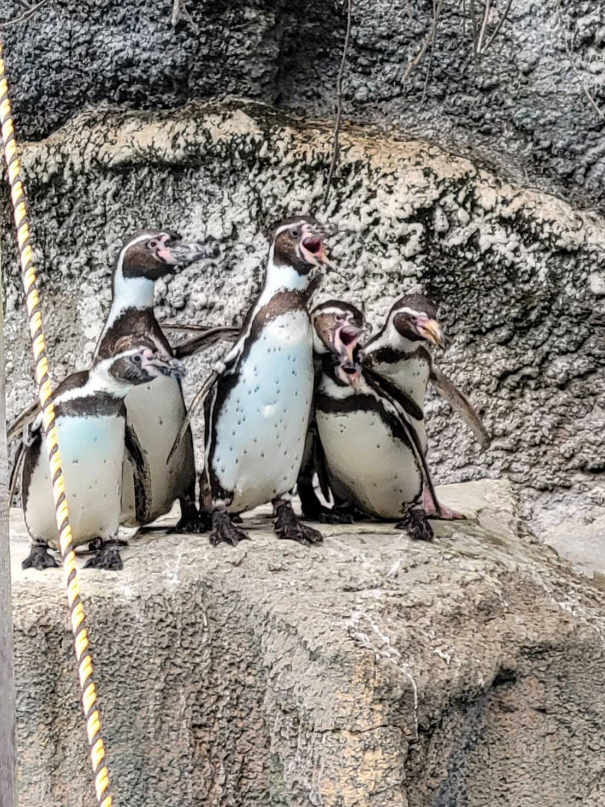
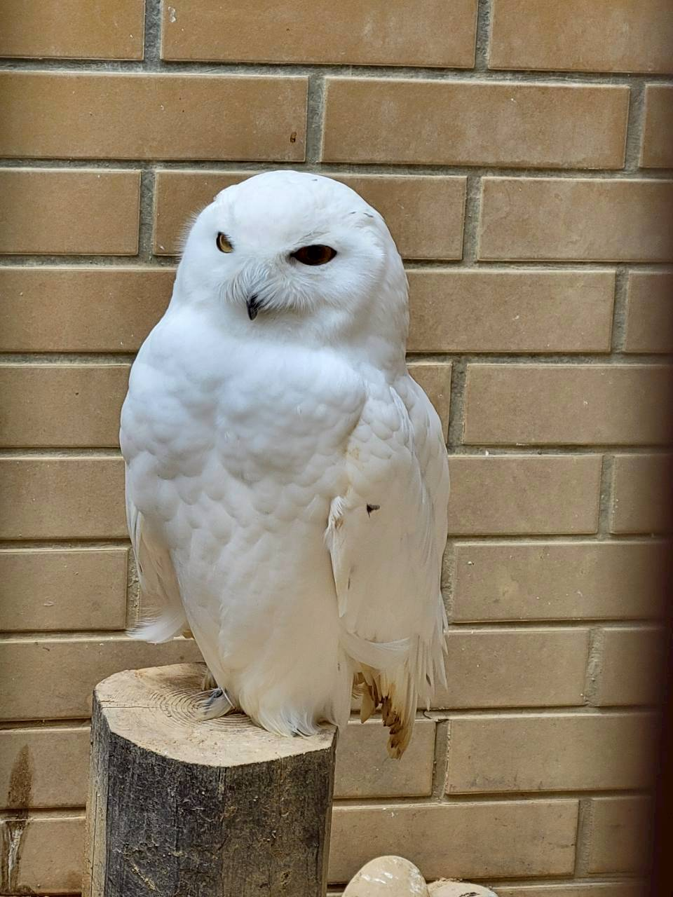

あいにいこう！まなぼう！

どうぶつをさがしにいこう！！

スマトラオランウータンたち

アムールトラたち

フンボルトペンギンたち

ぼくはここで 案内役 をしているシロフクロウだよ！
このコーナーにいる 動物 たちは、「 絶滅 してしまうかもしれない 動物 」なんだ。 危険 の 大 きさによって、こんなふうに 分 けられるよ。
CR は「 深刻 な 絶滅 の 危険 」、 EN は「 絶滅 の 危機 」、 VU は「 急 いで 対策 しないといけない」 っていう 意味 なんだ。
CRがいちばん 危険 で、EN、VUの 順番 で、少しずつ 危険度 が 低 くなっていくよ。
どうやったらこの 動物 たちを 守 れるか、いっしょに 考 えてみよう！
📍住所：静岡県浜松市中央区舘山寺町199
🕒営業時間：9:00〜16:30
🎫大人500円
中学生以下無料
70歳以上無料
| ひづけ | イベント |
|---|---|
| 6/21 | せかいキリンの日 |
| 6/28 | ミーアキャットガイド |